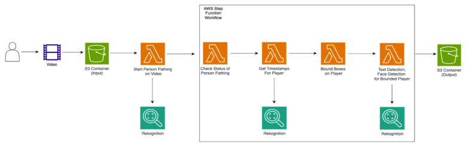

Player Tracking Solution
Sports Company
Exploration of AWS-based tools and solutions for people tracking on video.
Overview
The POC aimed to develop a system implementing Amazon Rekognition tools to identify players in videos of junior-league soccer matches and achieve consistent tracking throughout the complete game.

Key Features
- Data collection.
- Data pre-processing.
- Video processing.
- Results validation.
Tech Stack
Python, AWS Rekognition, Lambda, S3.
Impact
While the initial stages showed promise, the team did not achieve the desired results. This outcome was influenced by limitations in the Amazon Rekognition offering and the announcement that People Pathing would be deprecated in favor of other third-party tools better suited for these tasks.
Despite the setbacks, the project provided valuable insights into the complexities and challenges associated with computer vision tasks. Key learnings include the importance of training custom models.